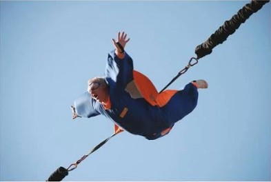

Pasi-Anssi tykkää lentää
Pasianssi tykkää pelata shakkia, pelata Jalkapalloa ja katsella Games of Thronesia.
Pasi-Anssi harrastaa valokuvaamista.
Hän on harrastanut valokuvaamista jo usean vuoden ajan.